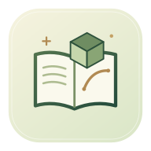

오프라인 교재 저장이 완료되면 인터넷 없이도 학습할 수 있어요. 답안과 노트는 기기에 먼저 저장하고, 연결되면 서버에 동기화합니다. 중요한 기록은 ‘학습 기록 저장’으로 보관해 주세요.
학습 기록을 확인하고 있어요.
아이폰·아이패드에서 같은 학습 링크를 열면 진도, 답안, 풀이 노트를 이어서 사용할 수 있어요. 로그인이나 회원가입은 없어요.
공유 링크로 내 기록에 접근할 수 있어요. 본인의 기기에서만 사용해 주세요. 연결이 끊겨도 이 기기에 먼저 저장하고, 다시 연결되면 서버에 저장해요.
한국 시간 기준이에요. 오늘 목표를 끝내고 서버에 저장되면 알림을 보내지 않아요. 기기마다 알림 권한을 한 번 허용해 주세요.